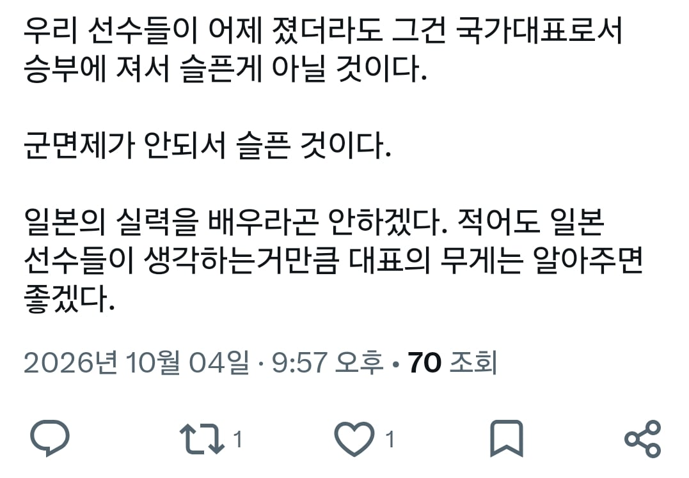

일본을 비웃고 조롱하라고 한 적은 없는데
일본도 욕 좀 먹어야됨
저런놈들 상대로 골문을 ㅈㄴ 두들겼으면서 어떻게 한골을 못넣어가지고 군대를 못보내냐
난 이제 이런거 보면 국적 불문하고
배우지 못해서 라고 생각해
국영수도덕사회를 안해서 그런거임
배운사람은 사람들 앞에서 병역면제를 자랑하지 않음
보이지 않는곳에서 신나 하지 그냥 못배운거야
아무리 운동만 시킨다 해도
애들 책좀 읽혀라
저게 뭐냐 부끄럽게
그러네 일본 선수들이 더 어른스러웠고 스포츠맨이었네
결승전에서 지고 우는게 비웃고 조롱할 일임?
글쓴놈 부터 어른이 아닌데 뭔 ㅋㅋ
조롱은 태극기가 안 올라간 게 조롱이고
일본팀 졌다고 비웃고 조롱하던 놈들이
이제 또 국대 욕하고 있다 이말이지?
유독 일본전만 하면 감정적인게 ㅂㅅ같긴함
전설의 1군 드립 뭐 그런 조롱이겠지 선수에 대한 조롱이 아니라
일본선수 비웃고 조롱한건 뭐임?